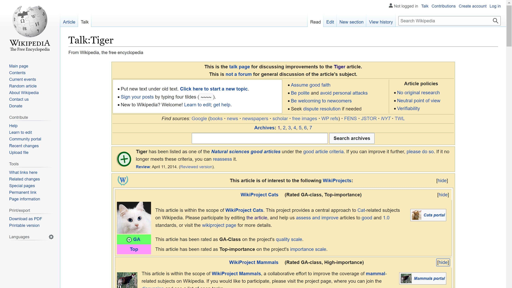
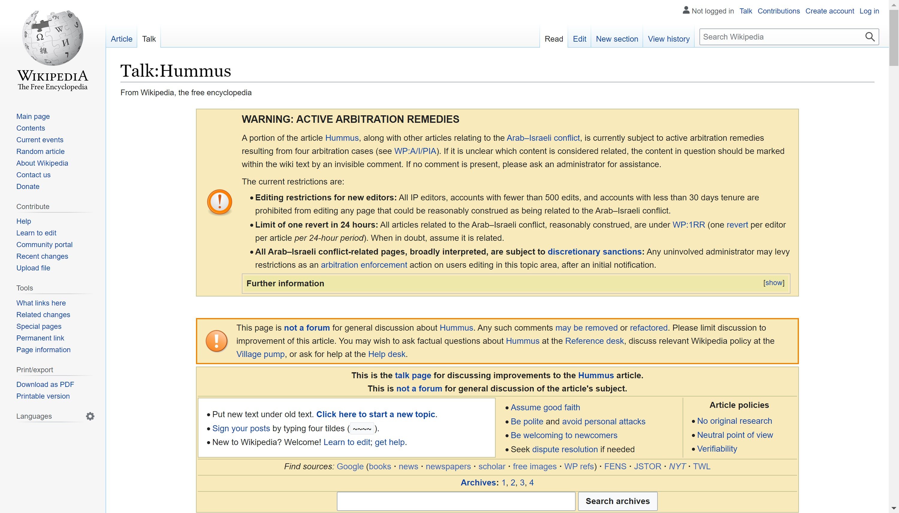

Transcript with visuals:
[11:25-11:46]
Cecilia Zhang: Sometimes people will like on Christmas eve at 9pm they will be doing these
edit wars without like, "No tigers are the most powerful cats in the world. Don't you dare say
otherwise," you know? [...] On the other hand,
it also speaks to their dedication towards truth.

[13:48-14:50]
Cecilia Zhang: But if I did on something like hummus, people are going to like, "Well why do people
argue about hummus? That's kind of stu-
pid." I love the hummus page. The reason why
it's controversial
is because of the Israeli-Palestinian conflict.

[29:27-29:46]
Cecilia Zhang: Instead of doing a book that's expensive, that only a few people will read. I like
this idea of like a subway pamphlet that you would just give to everyone in the same way that knowledge
is free. I wanted my thesis to also be low-production.